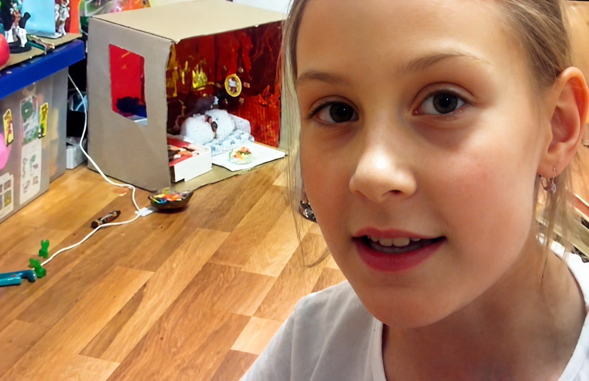

В 21 год я оказалась в строительной компании — хотя первые дома строила для своих кукол
До этого более пяти лет я работала в сфере общественного питания. Эта работа давала мне стабильный доход, опыт общения с людьми и понимание клиентского сервиса, однако я не видела для себя дальнейшего профессионального развития в этом направлении. Это был временный вариант заработка.
Работа в ресторане «САД» постепенно помогла мне понять, что мне интересны не только люди и коммуникация, но и пространство, в котором эти люди находятся.
Я решила рискнуть и попробовать себя в новой сфере — маркетинге. Это решение сопровождалось большим количеством сомнений: снижением дохода, необходимостью адаптироваться к новому коллективу и риском понять, что выбранное направление мне не подходит.
Но в итоге я выбрала принцип: иногда необходимо сделать шаг назад, чтобы затем сделать два шага вперёд.
